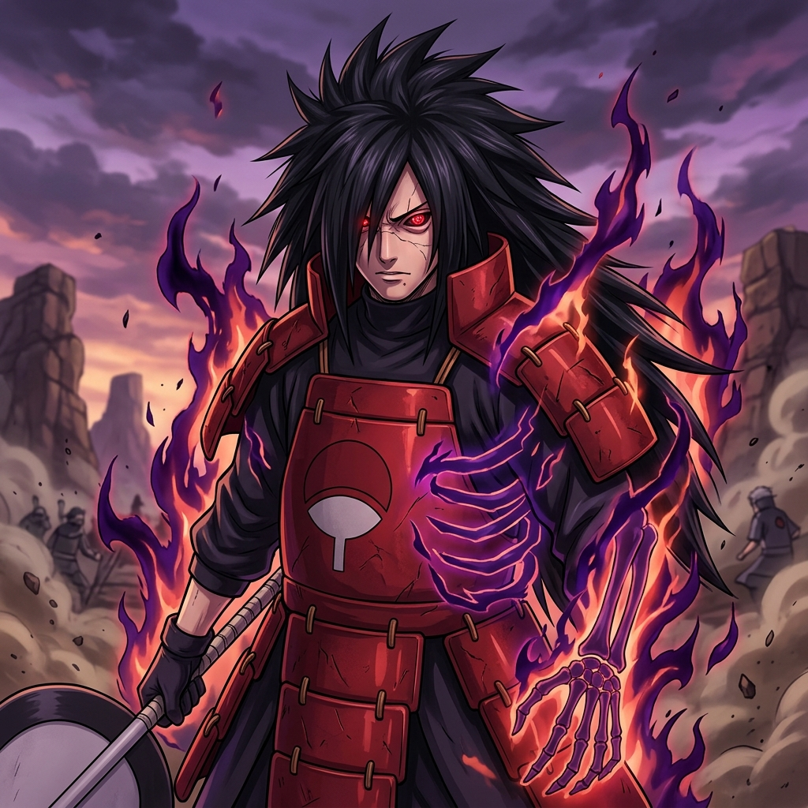
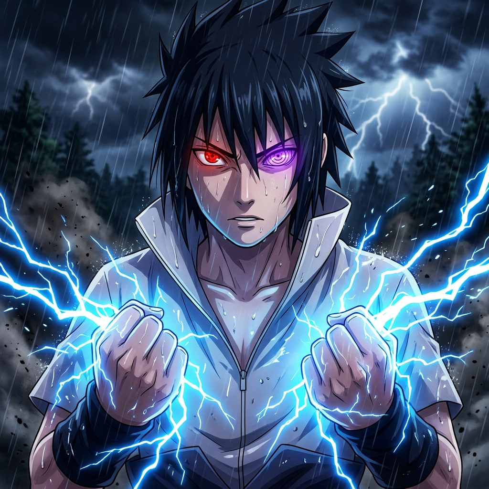
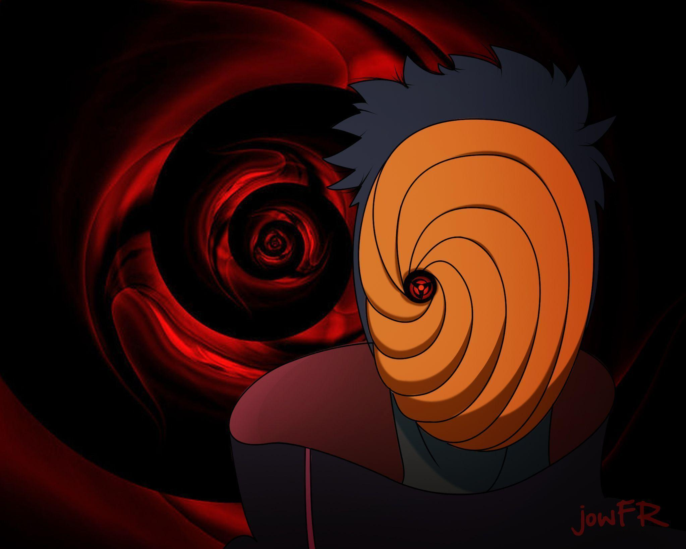

SUSANOO
宇智波斑
Madara Uchiha
Legendary Ghost of the Uchiha
"Wake up to reality..."
SELECTED
AI Text-to-Speech in Hindi & English • Five Legendary Ninja Voices
Select any of the five legendary characters to summon their voice

Legendary Ghost of the Uchiha

Shadow Hokage & Avenger
Hero of Konoha & Seventh Hokage

The Masked Man of Akatsuki
The Copy Ninja of the Sharingan
Applies real-time pitch shifting, sub-bass resonance, throat rasp, and mask acoustic shaping to match the anime